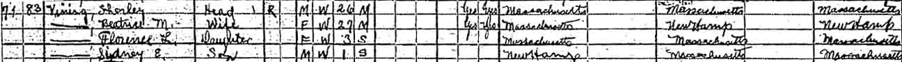
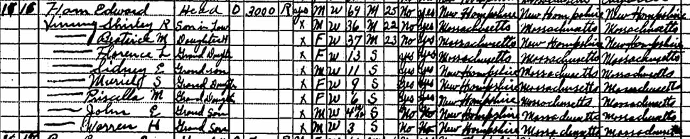
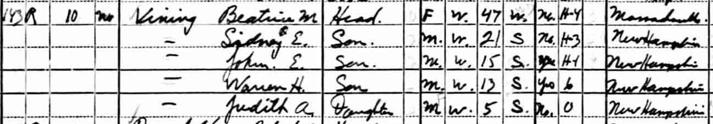

Census Data
| 1920 | 1930 | 1940 | |
| Shirley R. Vining | 26 | 36 | dead |
| Beatrice M. (Ham) Vining | 27 | 37 | 47 |
| Florence L. Vining | 3 | 13 | [living? in separate household] |
| Sidney Ellsworth Vining | 1 | 11 | 21 |
| Muriel S. Vining | 9 | [living? in separate household] | |
| Priscilla M. Vining | 6 | [living? in separate household] | |
| John E. Vining | 4 y., 1[1?] m. | 15 | |
| Warren H. Vining | 3 | 13 | |
| Judith A. Vining | 5 |


